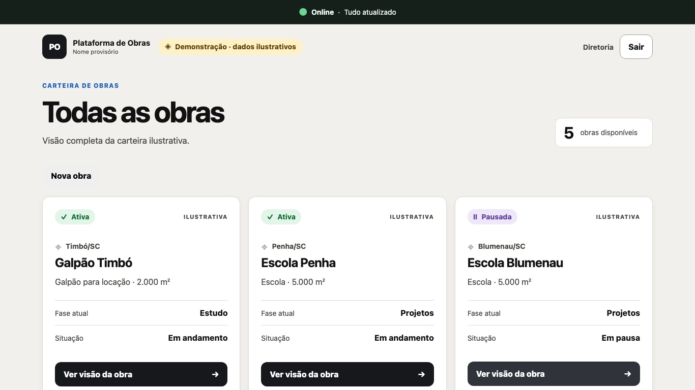
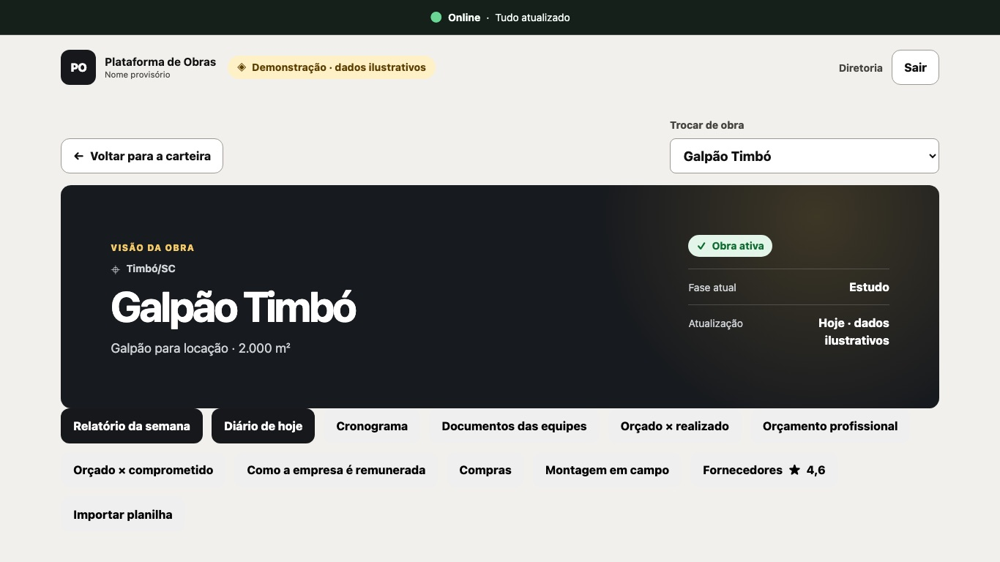
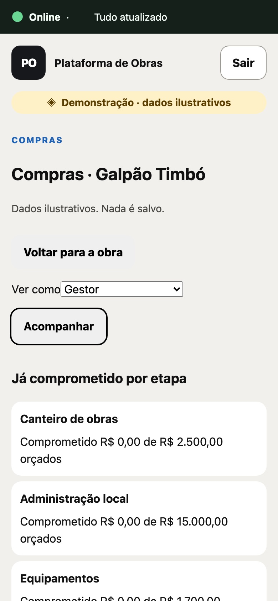
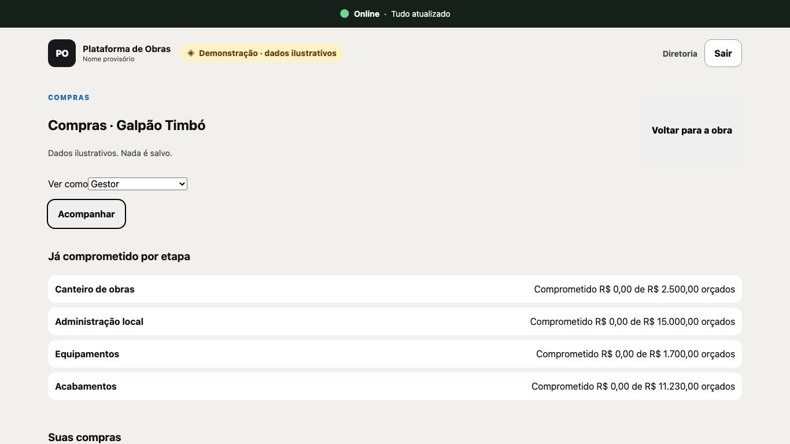
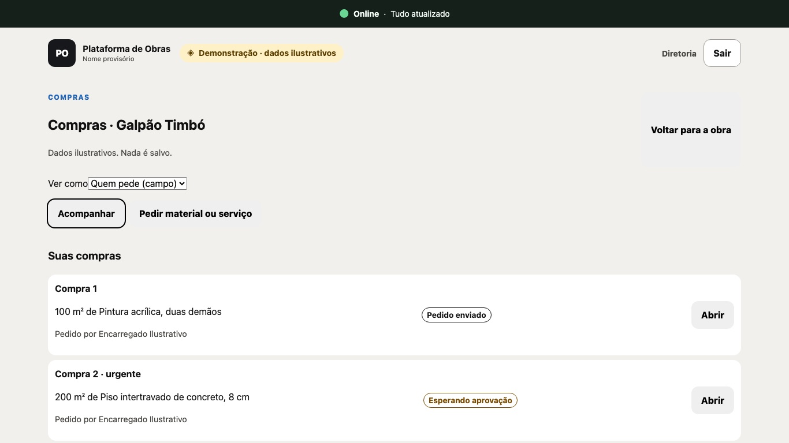
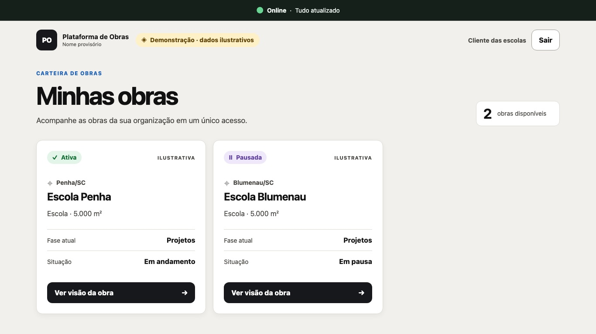
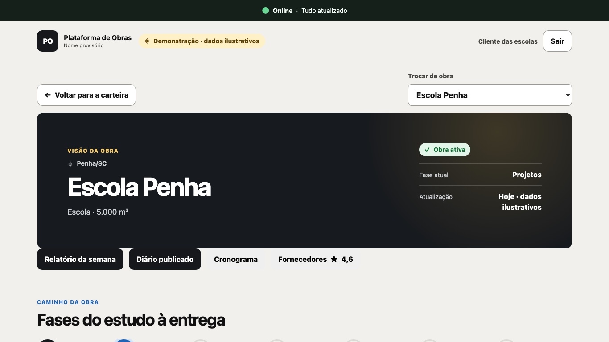

demo). Nenhum dado real.
Em resumo. Quem decide o que cada pessoa vê é o banco, não a tela. Isso já funciona para: acesso por obra, alçada de compras e o que o cliente vê de valores. Mas ainda não há tela para mudar essas regras. Hoje só a diretoria pode mudá-las, e só pelo banco. O gestor não configura o que engenheiros e o campo veem. Ele só convida engenheiro, campo e cliente para as obras dele.
Limites dos prints. A prévia só tem login de diretoria e de cliente. Gestor, engenheiro e campo ainda não têm login próprio na demo. Para o gestor e o campo, usei a tela de Compras, que tem a opção "Ver como". O engenheiro ficou sem print. Não tirei prints da homologação porque eu não tenho o login de teste de lá. Tudo aqui vem só da prévia.




Sem print: a prévia não tem login de engenheiro, e a tela de Compras não tem a opção "Ver como: engenheiro".



| Item | Já existe | Falta | Tarefa · horas · cabe até 30/11? |
|---|---|---|---|
| Módulos ligados por empresa e por perfil | No banco: cada módulo (gestão, montagem, compras) liga por empresa e por perfil. O banco barra quem não tem o módulo. Compras nasce ligado para gestor, engenheiro e campo. Montagem nasce desligada. | Não há tela. Ninguém liga ou desliga pelo app, nem a diretoria. Hoje só o operador muda isso, direto no banco. O menu do app real que segue os módulos ainda está em revisão (EXC-144). | Tela "Módulos" só para a diretoria, com registro de quem mudou · 8 h · não cabe: o padrão atual já serve para 30/11. Fica para a 1ª semana de dezembro. |
| Acesso por obra (quem entra em qual obra) | Cada pessoa só vê as obras em que foi incluída. A diretoria vê todas. Existe tela de convite: a diretoria convida qualquer perfil, e o gestor ou engenheiro convida engenheiro, campo e cliente para as obras dele. | Não há tela para ver quem tem acesso a cada obra, tirar alguém nem trocar o perfil. O banco já permite fazer isso. | Lista de pessoas por obra, com "tirar acesso" e "trocar perfil" · 5 h · cabe só se alguém tiver folga depois de 25/11. Recomendo fazer, porque tirar o acesso de quem sai da obra é o que mais vai fazer falta. |
| Alçada de aprovação de compras | No banco: o valor é por pessoa e por obra. Só a diretoria muda. O gestor aprova até esse valor, e acima dele vai para a diretoria. Quem pede não aprova o próprio pedido. A decisão guarda a alçada que valia na hora. | Não há tela para mudar o valor. Na prévia, o valor está fixo em R$ 20.000. | Campo "alçada" na lista de pessoas da obra · 3 h · não cabe: até lá, o operador grava no banco o valor que a diretoria passar. |
| O que o cliente vê do orçamento | No banco, por obra, com três opções: só o preço de venda (padrão), preço de venda com remuneração separada, ou custo aberto. Só a diretoria muda. O cliente nunca vê preço de fornecedor das compras. | Não há tela para escolher a opção. O cliente também ainda não tem a tela do orçamento na conta real. | Escolha na ficha da obra, só para a diretoria · 3 h · não cabe, e não faz falta em 30/11: o padrão é o mais seguro. |
| Quem vê a remuneração | Na prévia, só a diretoria vê "Como a empresa é remunerada". O cliente vê a remuneração em linha separada só se a obra estiver nessa opção. | A remuneração ainda não é gravada no banco (é a parte P12). Por isso ainda não existe regra no banco de quem a vê. | Na própria P12: só diretoria e gestor da obra leem; engenheiro, campo e cliente não leem · 2 h dentro da P12 · cabe, se for decidido agora. |
Resposta direta: o gestor não configura o que engenheiros e o campo veem. Ele só escolhe quem entra nas obras dele, e com qual perfil (engenheiro, campo ou cliente). Todo o resto é da diretoria, e hoje só pelo banco. Para 30/11, recomendo fazer só a regra da remuneração (dentro da P12) e, se sobrar folga, a lista de pessoas por obra. Nada disso atrasa P9–P16.
Do código: menu por perfil e módulo (EXC-144, menuDaObra, lerModulosDaObra e modulos_habilitados); módulos por empresa e por perfil (EXC-87); regras do banco para obras, diário, orçamento, montagem e documentos; convites (EXC-131); compras com alçada (EXC-117); e o que o cliente vê de valores (EXC-48).